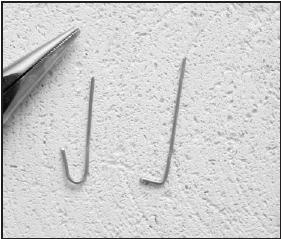
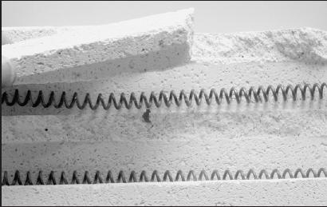
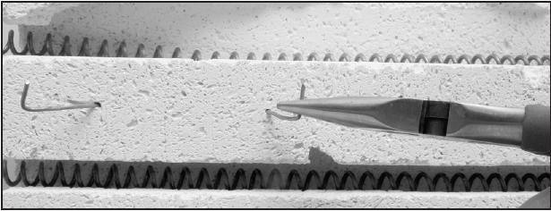
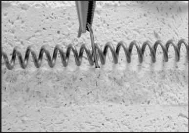

kiinnityskoukkuja vastuslangasta
[Yrit‰ katkaista lanka vinoon, niin ter‰v‰ p‰‰ on helpompi painaa tiileen]

2. Sovita pudonnut tiilenpala paikalleen.

3. Pihdeill‰ paina L-koukku tiileen palan l‰pi. K‰yt‰ kaksi koukkua ja paina ne hieman erisuuntaan vinoon niin ne sitovat tiilenpalan paremmin. Paina koukut tiilen pinnan tasoon. Huolehdi ettei koukku voi koskettaa vastuslankoja. Varo myˆs ettei koukku ylety tiiliverhouksen l‰pi uunin sein‰‰n.

Vaihtoehtoisesti voit U-muotoisella koukulla sitoa vastuksen tiileen, jos ura on murtunut niin ettei vastus tahdo pysy‰ siin‰. Koukku saa koskettaa vain yht‰ vastuskierukkaa.